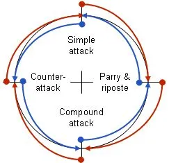

In the en garde position, the fencers feet are in a L position, with theit knees bent significantly. Their weapon arm is held out above their hand, with their elbow bent so that the blade is facing slightly upwards. This is a neutral stance in a slightly defensive position so that the fencer can quickly respond to any incoming threats
Simple Attack
A simple attack that consists of extending your arm and blade to contact the opponent. This attack is also known as a thrust. Under Priority Rules, this action is considered declaration of attack and transfers priority over to the attacking fencer.
Lunge
A lunge is done when a fencer thrusts their body by a slight kicking and extends their front leg. This has the advantage of covering far more distance in a single step, yet still allowing for balance, and the ability to quickly return to en garde position.
Parry
The parry is a basic defensive technique where the fencer has to block the opponents blade while they are attacking. The defending fencer deflects the attackers blade away from the target area. In épée, this is done to prevent a touch, however, in sabre and foil, a parry by the defending fencer transfers priority over to them. It is often followed by a riposte.
Riposte
A parry is almost always followed by a riposte. After a parry, the attacker is in a slightly awkward position as they recover. This is a perfect opportunity for the defender to strike immediately after a parry to score a touch. In sabre and foil, once a defender has parried, they have the priority and are free to make the riposte. The attacker cannot make a consecutive attack as they will not be awarded any points for a touch.
Beat Attack
A beat is an aggressive move by an attacking fencer where they strike or 'beat' the middle of the opponents blade. The objective of this is to provoke a reaction or create an opening. This action knocks the opponents blade aside and gives the attacking fencer an opening to attack. Under priority rules, a beat is considered an aggressive move with intention to attack. It transfers priority over to the attacking fencer.
Counterattack
A counterattack is an attack made agaisnt or, into an, attack initiated by an opponent. This is also known as an attack into preparation. It requires the attacking fencer to react and move faster than their opponent. It is a common move in épée fencing. However, under priority rules, a counterattack is not awarded priority. Hence, this move is considered a bad one in foil and sabre
Point-in-Line
A point-in-line is a made by extending a fencers arm and weapon towards their opponents target area. A point-in-line counts as a threat towards the opponents under priority rules. When a point-in-line is made, any successful attack by the opponent will not score a point as they do not have priority. In order to regain priority and make an attack agaisnt a point-in-line, the fencer has to break the line by beating the blade to regain priority. In épée, even though there are no priority rules, point-in-line is still an effective tactic.
Tactical Wheel

A tactical wheel is a visual representation of all the options a fencer has at their disposal throughout a bout. It illustrates how and when each of the above moves should be used and how different tactics may be countered. For expert fencers, it is also important to think of your opponents strategy many moves ahead and how to open them up to a vulnerability while ensuring that oneself is defended.